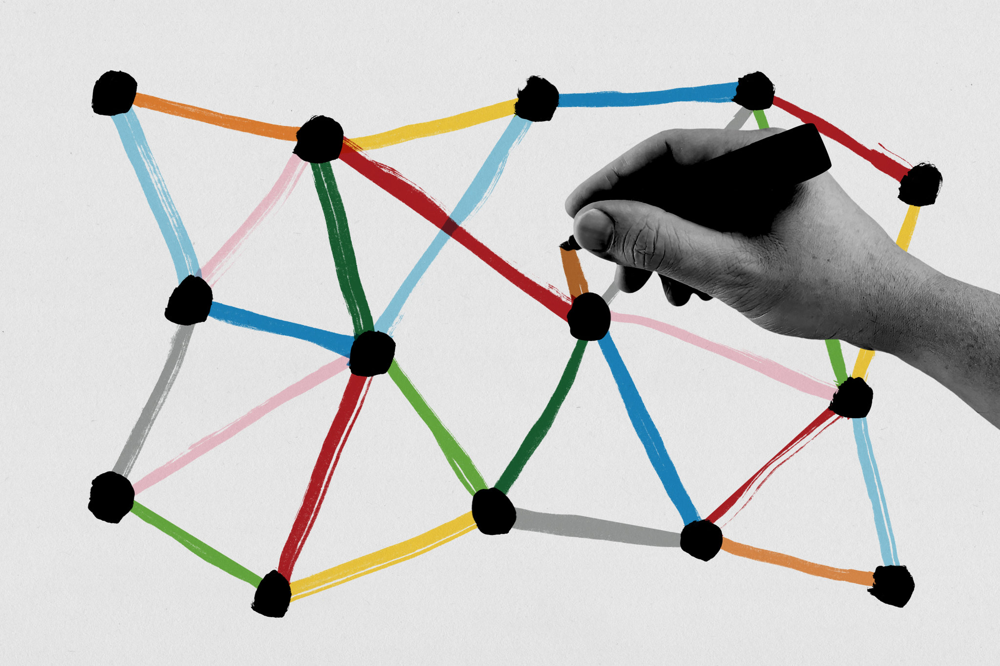

¿Qué dificultades he encontrado en las 3 materias?
- Muchos números y muchas operaciones matemáticas
- Uso constante de reemplazo de variables en fórmulas
- Despeje de fórmulas
- Usar conocimientos pasados de trigonometría
- Uso de Excel (Sigo sin saber usarlo bien)
¿Cuáles son las actividades más significativas que he hecho?
- Problemarios en TSF (Temas Selectos de Física) y en Cálculo Diferencial
- Ejercicios de medición con el vernier
- Ejercicios de media, moda y mediana
- Ejercicios para identificar patrones
¿Qué me hace sentir cada una de las 3 materias? (nombra tus emociones)
- TSF: Me hace sentir mucha emoción porque la forma en la que el profesor da la materia es muy buena y hace ver los temas muy interesantes, además como quiero estudiar una ingeniería, el tema de estática se me hace muy importante y útil para mi carrera.
- Cálculo Diferencial: Me hace sentir miedo y estrés porque me pierdo muy fácilmente en las explicaciones, y no acabo de entender al 100% lo que estoy haciendo, simplemente siento que memorizo y copio. Además, he leído que el cálculo diferencial e integral son las bases de la mecatrónica (carrera que quiero estudiar), y no entender me estresa.
- Probabilidad y estadística: Me hace sentir interés y dudas porque yo pensaba que la estadística se limitaba a media, moda y mediana, y ahora me doy cuenta que hay mucho más trasfondo en estos temas.
¿De qué manera se pueden relacionan entre ellas?¿Hay alguna relación?
Opino que la principal relación que hay es el desarrollo del pensamiento matemático y el entendimiento de operaciones algebraicas para representar situaciones y problemas de manera matemática. Por ejemplo, para un proceso de investigación de TSF, se puede llegar a necesitar sacar la media o moda de varios resultados, o bien, calcular el límite de alguna función para representar un problema.
¿Qué te gustaría cambiar? (de tu persona o las materias o la manera en que se imparte la materia?
Me gustaría cambiar la forma en la que pongo atención en clases, ya que con la mínima distracción que encuentre, dejo de poner atención y me cuesta mucho retomar el hilo de la explicación. Y hablando de que cambiaría de la clase, me gustaría que las explicaciones fuesen un poco más lentas ya que en algunas ocasiones las he sentido medio aceleradas.
¿Cuáles son las habilidades qué más has desarrollado y en qué actividades?
- Pensamiento crítico: Se ha desarrollado en todos los problemarios que hemos hecho en las 3 materias, ya que se tiene que pensar con calma el resultado, así como analizar todas las posibilidades para resolverlo de la mejor manera.
- Transferencia: Se ha desarrollado en los ejercicios hechos en Excel, ya que algunas cosas aprendidas en en Cálculo nos han sido de utilidad en TSF y en Probabilidad y estadística.
- Organización: Las operaciones y el acomodo de datos en Excel requieren de mucha organización para poder leerse de manera correcta y no confundirse al momento de interpretarlos. Es por esto que en todos los procesos matemáticos y ejercicios en Excel, se ha desarrollado esta habilidad.
¿Cómo te gustaría continuar desarrollando estas habilidades?(Por tu cuenta, las dejarás así, actividades propuestas, mantener qué actividades)
Si me gustaría seguir desarrollando mis habilidades por mi cuenta, y de primeras, se me ocurren dos formas en las que puedo hacer esto:
- Inscribirme a Kumon: Esta es algo que ya llevo pensando un tiempo, y es que definitivamente necesito regularizarme en matemáticas ya que pase 4 años (desde 2do de secundaria hasta 2do de prepa) sin preocuparme por aprenderlas y entenderlas porque me prometí nunca estudiar algo en donde estuvieran involucradas (y aquí estoy jajaja, queriendo estudiar una ingeniería).
- Aprender en youtube: Creo que no es un secreto que youtube es un universo de conocimientos e información, y con grandes canales como lo son JulioProfe o el Traductor de Ingenierías, sería un pecado desperdiciar el conocimiento que nos facilitan. Es por esto que intentaré ver algunos videos de temas que sean de mi interés para ir ampliando mi panorama.
¿En qué medida crees que se desarrollen tus habilidades en un futuro(tu bachillerato) en comparación a lo que has avanzado estas 6 semanas en FM?
Creo que se seguirán desarrollando de mejor manera ya que los temas serán más específicos y con un mayor enfoque a lo que se trabajará una vez terminada la carrera. Sin embargo, esta misma especificación en los temas hará que sea más fácil perderse ya que todos los temas estarán más estrechamente conectados. Personalmente, espero ya en ese entonces haya solucionado mi problema de atención, ya que si no, me será muy complicado entender.